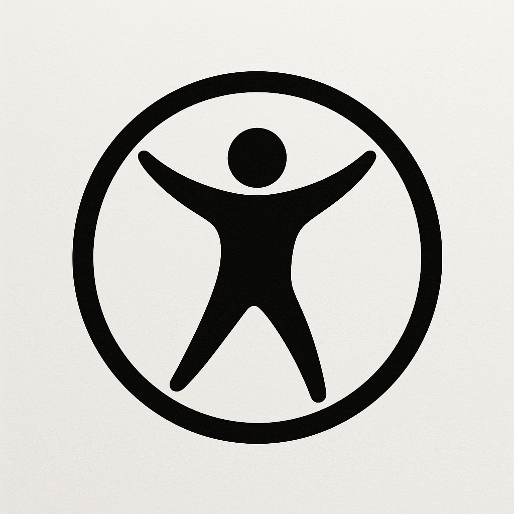

Galeri Katsu Kami

Chicken Katsu Original

Katsu Curry
Bento Spesial
Chicken Katsu Original
Katsu Curry
Bento Spesial
Daging ayam premium digoreng krispi, disajikan dengan nasi dan salad.
Rp 25.000
Katsu disiram saus kari Jepang khas, cocok untuk pecinta rasa kaya rempah.
Rp 30.000
Paket lengkap dengan katsu, nasi, salad, dan telur dadar – cocok untuk bekal.
Rp 35.000
Alternatif sehat berbasis nabati, cocok untuk vegetarian dan vegan.
Rp 22.000
Alternatif sehat berbasis nabati, cocok untuk vegetarian dan vegan.
Rp 22.000
Alternatif sehat berbasis nabati, cocok untuk vegetarian dan vegan.
Rp 22.000“Rasa katsunya autentik banget, crispy di luar dan juicy di dalam. Sausnya juga mantap!”
“Tempat terbaik buat makan siang bareng teman. Porsinya pas dan harganya terjangkau.”